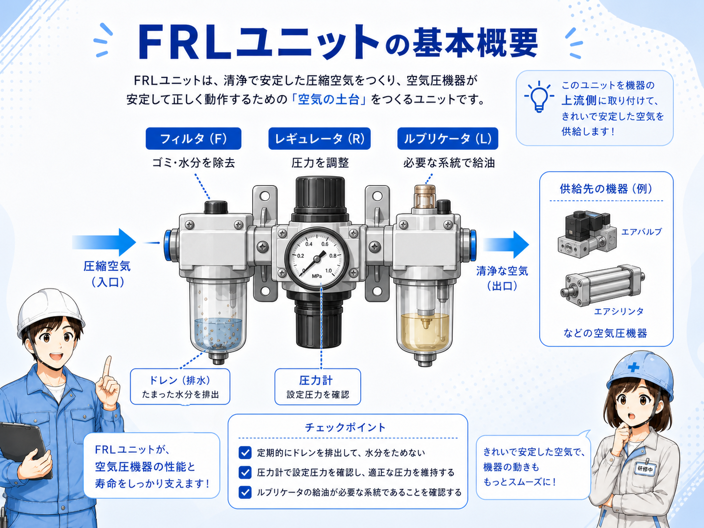
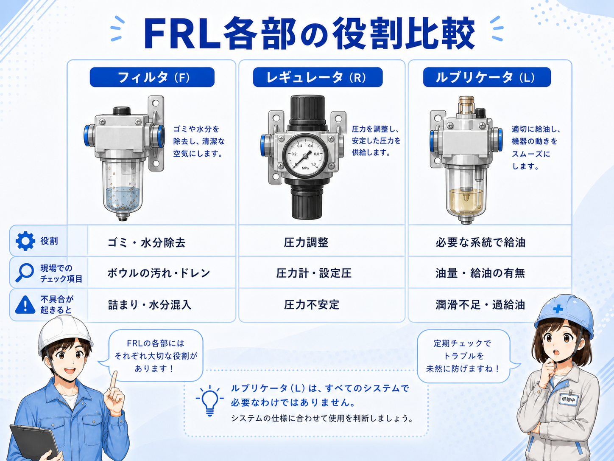
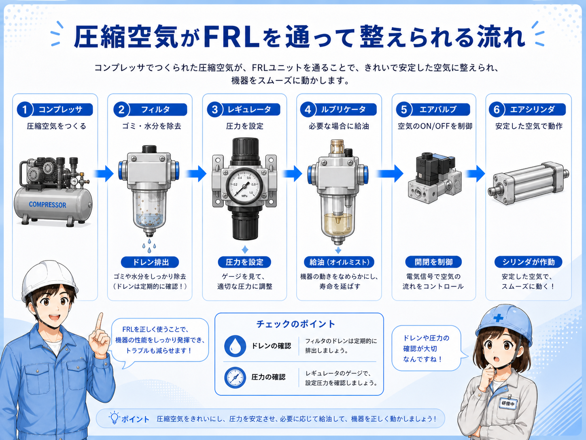

エアフィルタ・FRLユニットとは
エアフィルタは、圧縮空気に含まれるゴミや水分を取り除くための空圧部品です。 コンプレッサや工場エアから来た空気には、微細なゴミ、水分、油分などが混ざることがあります。
FRLユニットは、Filter、Regulator、Lubricatorの頭文字を取った呼び方です。 フィルタで空気をきれいにし、レギュレータで圧力を調整し、必要に応じてルブリケータで潤滑油を混ぜます。
最近の空圧機器では無給油で使えるものも多いため、必ずルブリケータが付くわけではありません。 まずはフィルタで空気を整える、レギュレータで圧力を整えると覚えると分かりやすいです。
まずはこう覚える
エアフィルタ・FRLユニットは、空圧設備へ入る空気を整える入口側の部品です。ゴミや水分を取り、圧力を調整して、エア機器が安定して動ける状態にします。

先輩空圧の入口側にあるフィルタやレギュレータは、エア機器を守るための基本部品だよ。シリンダやバルブだけじゃなく、元側の空気の状態も大事なんだ。

後輩空気が来ていればOKじゃなくて、きれいさや圧力も見るんですね。
エアフィルタ・FRLユニットの基本構成

基本の流れは、エア源、エアフィルタ、レギュレータ、必要に応じてルブリケータ、エアバルブ、エアシリンダです。 装置によっては、フィルタとレギュレータが一体になったフィルタレギュレータを使います。
フィルタには、ボウルと呼ばれる透明な容器が付いていることが多く、そこに水分や汚れがたまることがあります。 たまった水分はドレンとして排出します。
レギュレータには圧力計が付いていることが多く、二次側の設定圧を確認できます。 ルブリケータは、必要な機器へ少量の油を混ぜるための部品ですが、現在は使わない設備もあります。
流れ方向を見る
フィルタやレギュレータには空気の流れ方向があります。入口と出口を逆にしないよう、矢印やIN/OUT表示、図面を確認します。
エアフィルタ・FRLユニットを使う代表的な場面
エアフィルタ・FRLユニットは、空圧設備の入口側でよく使われます。 エアシリンダ、エアバルブ、真空発生器、エアブロー、空圧工具などに送る空気を整えるためです。
ゴミや水分が多い空気をそのまま使うと、エアバルブの動きが悪くなったり、シリンダ内部の劣化につながったり、ドレンが配管内にたまったりすることがあります。
| 部品 | 主な役割 | 現場での見方 |
|---|---|---|
| フィルタ | 圧縮空気のゴミや水分を取り除く | ボウルの汚れ、ドレン量、エレメント詰まりを見る |
| レギュレータ | 二次側の圧力を設備に合う値へ調整する | 圧力計、設定圧、ロック状態、元圧を確認する |
| ルブリケータ | 必要に応じて空気に潤滑油を混ぜる | 油量、滴下量、対象機器、使用有無を確認する |
| ドレン | フィルタで分離した水分を排出する | 自動排出か手動排出か、たまりすぎていないかを見る |
空圧トラブルは入口側も見る
シリンダやバルブの動きが悪い時、末端だけでなく、フィルタ詰まり、ドレン、元圧、設定圧など入口側の状態も確認します。
フィルタが正常な時・汚れている時の違い

フィルタが正常な状態では、空気がスムーズに流れ、ゴミや水分をある程度取り除けます。 ボウル内のドレンも適切に排出されていれば、下流側の機器へ水分が行きにくくなります。
フィルタが汚れている、エレメントが詰まっている、ドレンがたまりすぎている場合は、圧力低下や流量不足の原因になることがあります。 シリンダが弱い、動きが遅い、バルブの動作が不安定な時は、フィルタ側も見ます。
| 状態 | 起きやすいこと | 確認する場所 |
|---|---|---|
| 正常 | 空気が通りやすく、ゴミや水分を取り除きやすい | 圧力計、ドレン量、ボウル状態を確認する |
| ドレンたまり | 水分が下流へ行く、ボウル内が見にくい | ドレン排出、オートドレン動作、配管の水分を見る |
| フィルタ詰まり | 圧力低下、流量不足、動作遅れの原因になる | エレメント汚れ、圧力差、交換時期を確認する |
ボウル破損や薬品にも注意
フィルタボウルは透明で見やすい反面、割れや劣化に注意が必要です。薬品や油、衝撃、劣化で破損することがあるため、異常があれば交換や点検を検討します。
空気と元側処理の流れ

空気の流れを見るときは、まずエア源から装置へ入る入口を探します。 そこからフィルタ、レギュレータ、バルブ、シリンダへ順番に追うと、どこで圧力や流量が変わっているか分かりやすくなります。
トラブル時は、末端のシリンダだけを見るのではなく、元圧、フィルタ詰まり、ドレン、レギュレータ設定、下流側の漏れを順番に確認します。
1. エア源を見る
工場エアやコンプレッサから十分な元圧が来ているか確認します。
2. フィルタを見る
ボウル、ドレン、エレメント汚れ、流れ方向を確認します。
3. 圧力を確認
レギュレータの設定圧、圧力計、ロック状態を確認します。
4. 下流側へ追う
エアバルブ、シリンダ、継手、チューブ、漏れを確認します。
先輩空圧トラブルは、シリンダだけ見ても分からないことがあるよ。入口側のフィルタ、ドレン、圧力も順番に見ると原因を切り分けやすいね。
後輩エアが来ているかだけじゃなくて、フィルタや圧力の状態も見るんですね。
現場で見るときのポイント
現場でエアフィルタ・FRLユニットを見るときは、まずボウル内の状態を確認します。 水分がたまりすぎていないか、汚れが多くないか、ボウルに割れや白化がないかを見ます。
次に、レギュレータの設定圧と圧力計を確認します。 設備の指定圧と合っているか、圧力がふらついていないか、調整ノブがロックされているかを見ます。
ルブリケータが付いている場合は、油量や滴下量、対象機器が給油仕様かを確認します。 無給油機器に不要な油を送らないよう、設備仕様を確認することが大切です。
ここを覚える
FRLユニットは、空圧設備の入口側を整える部品です。フィルタ汚れ、ドレン、設定圧、流れ方向、下流側の漏れをセットで確認します。
ドレン
水分がたまりすぎていないか、自動排出が動いているかを確認します。
フィルタ汚れ
エレメントの詰まり、ボウルの汚れ、交換時期を確認します。
設定圧
圧力計の値、レギュレータのロック状態、指定圧を確認します。
流れ方向
IN/OUTや矢印の向きが正しいか、図面と照合します。
まとめ：エアフィルタ・FRLユニットは空圧の入口側を整える部品
エアフィルタ・FRLユニットは、空圧設備へ送る空気を整えるための部品です。 フィルタでゴミや水分を取り、レギュレータで圧力を調整し、必要に応じてルブリケータで潤滑油を混ぜます。
現場で見るときは、ドレン、フィルタ汚れ、設定圧、流れ方向、ボウルの状態を確認します。 エアシリンダやエアバルブの動きが悪い時も、入口側のFRLを確認すると原因切り分けに役立ちます。
この記事の結論
エアフィルタ・FRLユニットは、空圧設備の元側を整える基本部品です。ドレン・汚れ・設定圧・流れ方向を確認し、下流側の動作不良と合わせて見ましょう。